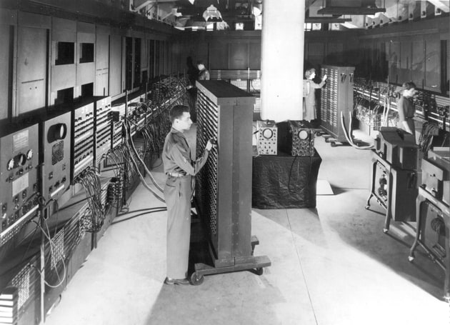

Dispatch · The paper
Front-page news in Ashtown Valley
The hardest parts have always been the non-technical ones. Tomato lives in the 90s. The paper is printed here.
The hardest parts of this journey have always been the non-technical ones. The name of the project, for example: that's when I begin spinning. Tomato is nothing special btw. I just couldn't keep calling it 32b cpu, 40b cpu, and other horribly generic names. I don't like (or dislike) tomatoes, nor do I have any special connection to it.
The website interface is the same unbounded problem. Should I give it a custom feel like a product page of renowned top companies, or a generic React package with flying colors (no pun intended) like I only had 100 tokens for my hungry agent?
| The fork | What it looks like | The catch |
|---|---|---|
| Product page | Stripe / Apple polish, 2026 | Tomato is not a product. It is a machine you can probe. |
| Generic React | Flying colors, hungry-agent special | No connection to the chips, or the decade they come from. |
| Broadsheet | 90s newsprint + 3D KiCad | This one. Tomato's actual time, with a door back to now. |
Luckily, I've gotten extremely better at such unbounded graphs. So for the website interface, I asked what this really is. Tomato is a 32b computer made with chips in a PCB form, dissimilar from modern tool chains, but rather that of the 70s, 90s!
So, let's take a step back (again, no pun intended), to the earlier times, the 90s, when Tomato truly lives. Over there, whatever social media you're reading this article on now doesn't exist, but newspapers did!
Let's put Tomato in a newspaper feel to remind of its truest time, but let's add 3D renders and models to connect us back to our own modernity. The front is a broadsheet: nameplate, deck, classifieds for the eight lots. The copper of 07_alu sits in the plate like a photograph.


Ashtown Valley, the Bay PerimeterGhana · not Silicon Valley · the press
For the finer details, it is a setting in Ghana, but Silicon Valley is obviously out (can't afford to go to court again and have law students study my case for exams iykyk). Let's call it something else: Ashtown Valley, on the Bay Perimeter. Silicon has the valley and the area. We got the valley, and the perimeter. The copper is inbound to Philadelphia.
So not to break the lucidity, I want GitHub to also be rendered first-hand in the vintage feel — GitHub, set in the same type, so you never have to leave the paper to see the forge. And if you want to leave, you can always return to modernity!
I love the freedom to create. Maybe unbounded problems aren't the bad guys like how the DRC/ERC boys frame it lol